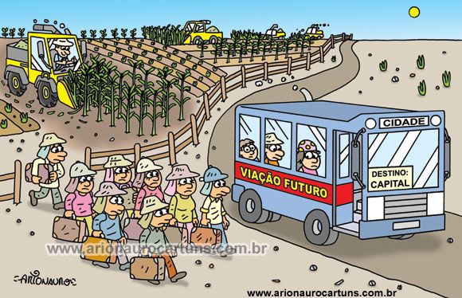

Transição do campo para a cidade.
Enquanto a tecnologia transforma o campo, muitos agricultores e seus filhos enfrentam a mudança para a cidade em busca de novas oportunidades e mais empregos. A vida no campo é marcada pela simplicidade e trabalho duro, mas também com paisagens únicas. No entanto, as oportunidades de estudo e emprego muitas vezes são limitadas e muito cansativo, pois muitas das vezes as escolas ou colégios são distantes do campo, fazendo com que os alunos acordem muito mais cedo para conseguirem ter um futuro melhor.
Assim sendo melhor migrar para a cidade para ter acesso a uma educação mais diversificada e mais fácil a locomoção até os empregos, tendo mais oportunidades em diversas áreas, como na tecnologia, serviços, comércio e indústria.

Para os jovens do campo, a preparação é crucial. Estudar com afinco, buscar informações sobre cursos e carreiras, e desenvolver habilidades sociais e profissionais são passos importantes para a adaptação à vida urbana, que exige flexibilidade e resiliência.
Muitos encontram maneiras de unir o melhor dos dois mundos. A tecnologia permite que agricultores modernizem suas práticas, enquanto alguns profissionais urbanos buscam a tranquilidade do campo para viver, trabalhando remotamente ou investindo em negócios rurais.
Conhecer as oportunidades que a cidade oferece não significa abandonar as raízes no campo. Pelo contrário, a transição pode enriquecer a vida de quem explora novos horizontes, combinando a eficiência tecnológica com a qualidade de vida rural. Com planejamento e determinação, é possível aproveitar o melhor de ambos os mundos e construir um futuro promissor..
As máquinas estão substituindo a mão de obra no campo de forma acelerada.
Com o avanço da tecnologia agrícola, equipamentos modernos e automatizados estão sendo cada vez mais utilizados nas fazendas,
realizando tarefas que antes dependiam do trabalho manual dos agricultores. Tratores autônomos, drones para monitoramento de plantações e sistemas de irrigação inteligentes são apenas alguns exemplos de inovações que estão transformando a agricultura. Essa mudança traz benefícios em termos de eficiência e produtividade, mas também levanta preocupações sobre o futuro do emprego rural,
à medida que muitos trabalhadores veem suas funções sendo desempenhadas por máquinas.